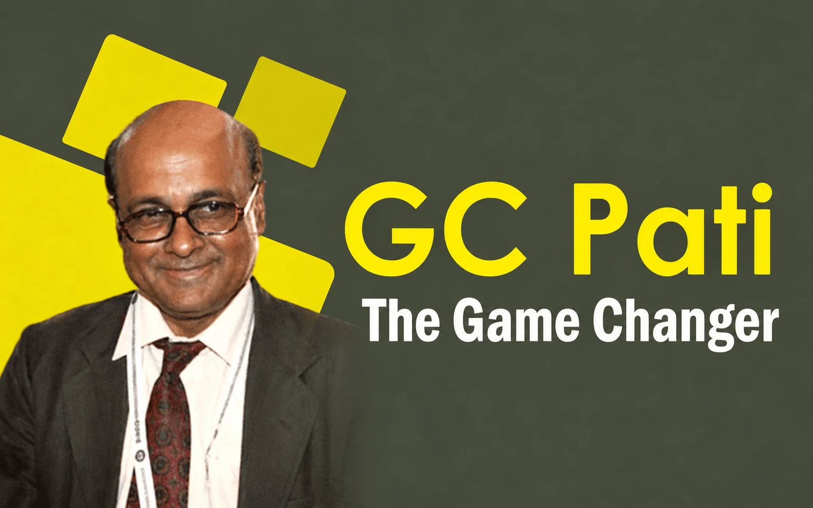

GC Pati : The Game Changer

In September, 1998 I joined as the Circle head (then CTO now DCCT/ JCCT )of Puri Circle on promotion. In the first week of October just the day before the Puja holidays, the CCT (Commissioner of Commercial Taxes) had an inspection of my office. Shri G. C. Pati, the Commissioner was equally new to the department and it was the third circle for him to inspect. It was our second meeting.
Earlier I had paid a courtesy call to him in his office after my joining. When he arrived I offered my seat to him as a gesture of respect and occupied the side seat. He wanted to know the functioning of the office and the different aspects of commercial tax administration. I was explaining to him the things that were threadbare and he was visibly happy. Suddenly he asked me how come I was very cool while explaining things to him whereas my counterparts in the previous offices he visited were fumbling for an answer and were apparently nervous.
Then I replied that they were fearful of the CCT to which he reacted that he was no tiger or lion either to be afraid of. Then he asked me why I was not scared of him. With equal ease, I replied that fear comes from two sources, ignorance and weakness and I don’t have either of the two. I knew the law well and I had no weakness. CCT was having a state jurisdiction and I had only a district under me. CCT was doing his job and I was doing my job. There was no reason for me to be afraid of the CCT. To this he had a big laugh observing my frankness and fearless attitude.
He was quite impressed. After the inspection was over he asked me to prepare a draft inspection note for him by next day and give it to him in the circuit house. Next day morning I handed over the draft to him and at first glance he was visibly satisfied. He then remarked that for an officer of my caliber Puri was a small place and he wanted to utilize my services elsewhere. He even asked me to keep my quarters in Bhubaneswar and indicated that he would try to shift me there next year.
From that day onwards for every tricky issue he used to consult me and take my suggestions. True to his words I was transferred to Cuttack in one of the largest circles of the State next year since it was not possible for him to accommodate me in Bhubaneswar. He was a man who wanted the Department to change its image as a dealer friendly one and make sure that things happen within a time frame. Computers were being introduced then and our officers and staff were reluctant to accept the change.
He said that anybody riding a bicycle can use a computer. VAT was on the anvil and he was to create awareness among the dealers and the department people about the new regime. He got many amendments done in the law to make it more transparent and dealer friendly keeping a futuristic view on his proposal Government abolished the border check gates which were breeding ground of corruption. He also took the initiative to end the Inspector Raj in the department by restricting their visit to business premises and re-designated them as Assistant Commercial Tax Officer (ACTO ).
With help of Biju Patnaik Film Institute ,video interactions were being conducted regularly and I was asked to moderate the sessions keeping in view my previous experience in All India Radio. On many occasions he asked me to draft circulars on different issues and when I submitted it to him he used to put his signature without going through it. This was the level of confidence he had on me. On the other hand, whenever he was found on the wrong foot I would point it out to him whereas our senior officers were keeping silent not to incur his displeasure.
He never minded to rectify himself and there was no misunderstanding between us. On one occasion one of my seniors tried to put me in a spot to shield his own misdeeds and he could realize the truth. He then issued me a commendation for my prompt and proactive action in that matter. There was a clamor in the department that because he belonged to my own district he had a soft corner for me which was not true. To a great extent he could be successful in changing the work culture of the department during his tenure.
Within no time he earned the displeasure of the Minister over transfer and posting of some officials in the department. One day the Minister called for a review of the Department in the third floor conference hall in the secretariat and it continued from forenoon till almost midnight and he left no occasion to ridicule the CCT in our presence to settle his score. In the midst of the meeting, once in the evening he went to the CM’s office nearby for a few minutes and came back with a smiling face. The next morning I was shocked to see that the CCT was transferred. Then I realized what might have transpired the previous evening when the Minister left the meeting for a few minutes. He finally took the revenge in a very sadistic manner.
I immediately visited the residence of Shri Pati. He was obviously crestfallen with the news and was oblivious of the backstage happenings the previous day. Tears came to my eyes when we met and it was like a personal loss for me. He tried to console me and told me that it was nothing unusual for a politician to behave in that manner. He advised me to accept it as a part of life. I left his residence with a heavy heart.
Subsequently, when he came back as Chief Secretary from Government of India he was equally nice towards me and was happy to find me promoted to IAS. After retirement he joined as a Member in Central Administrative Tributes outside the State and once when both of us were coming in the same flight from Delhi we met in the airport. He enquired about me and then suggested that I keep in touch with the emerging changes in tax laws after introduction of GST although I was then no more in the Finance Department.
Leave a thought
No account needed. Your name and comment appear publicly after approval.